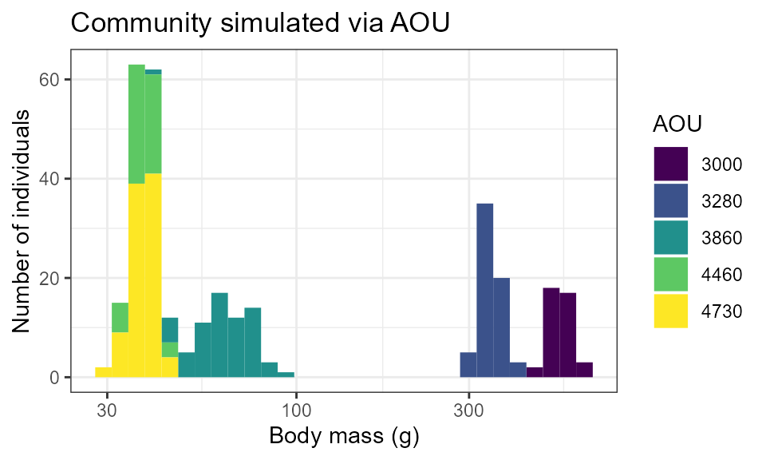
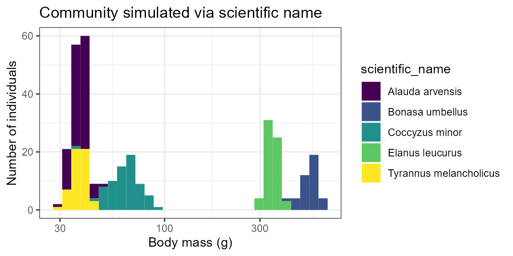

Overview
birdsize simulates mass measurements (in g) for birds.
Working from the assumption that individuals of a species have body
masses normally distributed around a species-wide mean and standard
deviation, birdsize simulates individual-level body mass
measurements by drawing from species-specific normal distributions.
There are parameters built-in for 450 bird species, or a user may supply
mean and optionally standard deviation values for additional
species.
The core functions in birdsize apply at 3 levels of
organization: species, population, and community:
- The
species_*functions take information about a real or hypothetical species and look up or calculate the parameters necessary to simulate body size distributions for that species. - The
population_*functions use species-level parameters and abundances (population sizes) to simulate individual body size and basal metabolic rate measurements to make up populations of that species. - The
community_*functions generate individual body mass estimates for multiple populations in one go (e.g. populations of different species, or populations of the same species at different points in time or different sampling locations).
Species-level parameters
In order to generate body mass estimates for a species,
birdsize needs an abundance value (how many
individuals to generate estimates for) and at least one of:
- For one of the 450 species known to
birdsize: the scientific name (as"Genus species") or the AOU numeric code. See LINK for a list of the species with data included inbirdsize. - For any other species: the mean body mass (in g) for that species. If a standard deviation value is provided, it will be used. Otherwise, it will be estimated based on the mean body mass via the scaling relationship described in the scaling vignette.
The species_define function uses the information
provided to look up, or calculate, the mean and standard deviation of
body mass to use to generate individuals of the desired species. This
function usually operates under the hood, but may be of interest to
advanced users or those interested in complex simulations involving
changes to the species-wide parameters.
Population (one species) simulations
Using species identity
For the birds known to birdsize you can use the species’
code (AOU) to simulate a population directly. For the hummingbird
Selasphorus calliope:
a_hundred_hummingbirds <- pop_generate(abundance = 100, AOU = 4360)
head(a_hundred_hummingbirds)
#> AOU sim_species_id individual_mass individual_bmr mean_size sd_size
#> 1 4360 4360 2.556873 20.50623 2.65 0.1818394
#> 2 4360 4360 3.101904 23.53533 2.65 0.1818394
#> 3 4360 4360 2.833263 22.06327 2.65 0.1818394
#> 4 4360 4360 2.703245 21.33652 2.65 0.1818394
#> 5 4360 4360 2.612003 20.82052 2.65 0.1818394
#> 6 4360 4360 2.987874 22.91515 2.65 0.1818394
#> abundance sd_method scientific_name
#> 1 100 AOU lookup Selasphorus calliope
#> 2 100 AOU lookup Selasphorus calliope
#> 3 100 AOU lookup Selasphorus calliope
#> 4 100 AOU lookup Selasphorus calliope
#> 5 100 AOU lookup Selasphorus calliope
#> 6 100 AOU lookup Selasphorus calliope
ggplot(a_hundred_hummingbirds, aes(individual_mass)) +
geom_histogram(bins = 25) +
xlab("Mass (g)") +
ylab("Count") +
ggtitle("A population of hummingbirds") Using a known mean and standard deviation
Alternatively, you can simulate body masses for a population by
supplying the body size parameters yourself. This may be useful if you
would like to work with a species not included in birdsize,
test sensitivities to different parameter ranges, or generate values for
simulation/null models (or, other applications!).
Note that, if both mean mass and a species code are provided, the species code will be used and the mean mass provided will be ignored!
a_hundred_hypotheticals <- pop_generate(abundance = 100, mean_size = 25, sd_size = 3)
head(a_hundred_hypotheticals)
#> AOU sim_species_id individual_mass individual_bmr mean_size sd_size abundance
#> 1 NA 1 19.86281 88.44888 25 3 100
#> 2 NA 1 22.60234 96.98414 25 3 100
#> 3 NA 1 20.76744 91.30263 25 3 100
#> 4 NA 1 26.59827 108.92055 25 3 100
#> 5 NA 1 23.80690 100.64180 25 3 100
#> 6 NA 1 24.14694 101.66465 25 3 100
#> sd_method scientific_name
#> 1 Mean and SD provided <NA>
#> 2 Mean and SD provided <NA>
#> 3 Mean and SD provided <NA>
#> 4 Mean and SD provided <NA>
#> 5 Mean and SD provided <NA>
#> 6 Mean and SD provided <NA>
ggplot(a_hundred_hypotheticals, aes(individual_mass)) +
geom_histogram(bins = 25) +
xlab("Mass (g)") +
ylab("Count") +
ggtitle("A population of hypothetical birds", subtitle ="Mean mass = 25 g\nStandard deviation = 3") 
Using a known mean, but no standard deviation
If the mean mass is not known or not provided,
pop_generate will estimate the standard deviation based on
scaling between the mean and standard deviation of body mass:
another_hundred_hypotheticals <- pop_generate(abundance = 100, mean_size = 25)
head(another_hundred_hypotheticals)
#> AOU sim_species_id individual_mass individual_bmr mean_size sd_size
#> 1 NA 1 26.24416 107.88463 25 1.746196
#> 2 NA 1 21.44791 93.42580 25 1.746196
#> 3 NA 1 20.79538 91.39020 25 1.746196
#> 4 NA 1 23.75958 100.49914 25 1.746196
#> 5 NA 1 22.17191 95.66364 25 1.746196
#> 6 NA 1 22.58620 96.93474 25 1.746196
#> abundance sd_method scientific_name
#> 1 100 SD estimated from mean <NA>
#> 2 100 SD estimated from mean <NA>
#> 3 100 SD estimated from mean <NA>
#> 4 100 SD estimated from mean <NA>
#> 5 100 SD estimated from mean <NA>
#> 6 100 SD estimated from mean <NA>
ggplot(another_hundred_hypotheticals, aes(individual_mass)) +
geom_histogram(bins = 25) +
xlab("Mass (g)") +
ylab("Count") +
ggtitle("A population of hypothetical birds", subtitle ="Mean mass = 25 g\nStandard deviation = 1.74") 
Community (multiple populations) simulations
community_generate takes a dataframe with species-level
information (AOU, scientific name, or mean and/or standard deviation
body mass) and population sizes, and returns a dataframe of
individual-level mass and BMR measurements for all the entries in the
input data frame.
Simulations using AOU
Here, we use a synthetic dataset with records of AOU and
abundance for 5 species, to make up a community:
data("toy_aou_community")
head(toy_aou_community)
#> # A tibble: 5 × 2
#> AOU abundance
#> <dbl> <dbl>
#> 1 4730 95
#> 2 3000 40
#> 3 3280 63
#> 4 3860 69
#> 5 4460 53community_generate can take this table and generate
simulated individual measurements with no additional tweaks. It uses the
AOU and abundance columns from
toy_aou_community to look up species’ mean and standard
deviation body masses based on their AOU and then draw individual size
measurements from a normal distribution with those parameters.
toy_aou_sims <- community_generate(community_data_table = toy_aou_community, abundance_column_name = "abundance")
head(toy_aou_sims)
#> AOU sim_species_id individual_mass individual_bmr mean_size sd_size
#> 1 4730 4730 38.82847 142.6440 37.475 3.300613
#> 2 4730 4730 40.41270 146.7697 37.475 3.300613
#> 3 4730 4730 42.74367 152.7569 37.475 3.300613
#> 4 4730 4730 34.45230 130.9863 37.475 3.300613
#> 5 4730 4730 36.21842 135.7394 37.475 3.300613
#> 6 4730 4730 42.32158 151.6799 37.475 3.300613
#> abundance sd_method scientific_name
#> 1 95 AOU lookup Alauda arvensis
#> 2 95 AOU lookup Alauda arvensis
#> 3 95 AOU lookup Alauda arvensis
#> 4 95 AOU lookup Alauda arvensis
#> 5 95 AOU lookup Alauda arvensis
#> 6 95 AOU lookup Alauda arvensisThe resulting table has one row per individual, with a unique
individual_size and individual_bmr estimate
for that individual.
We can then plot the individual size distribution for the community, colored by species ID:
toy_aou_sims$AOU <- as.character(toy_aou_sims$AOU)
ggplot(toy_aou_sims, aes(individual_mass, fill = AOU)) +
geom_histogram(position = "stack") +
scale_fill_viridis_d() +
scale_x_log10() +
ggtitle("Community simulated via AOU") +
xlab("Body mass (g)") +
ylab("Number of individuals") +
theme(legend.position = "right")
#> `stat_bin()` using `bins = 30`. Pick better value with `binwidth`.
Simulation given species’ names
If the AOU is not known or not provided,
community_generate will attempt to look up species’ size
parameters based on their scientific name.
data("toy_species_name_community")
head(toy_species_name_community)
#> # A tibble: 5 × 2
#> scientific_name abundance
#> <chr> <dbl>
#> 1 Alauda arvensis 95
#> 2 Bonasa umbellus 40
#> 3 Elanus leucurus 63
#> 4 Coccyzus minor 69
#> 5 Tyrannus melancholicus 53community_generate still runs, but note that the
sd_method here is listed as
Scientific name lookup rather than AOU lookup
(above).
toy_species_name_sims <- community_generate(toy_species_name_community, abundance_column_name = "abundance")
head(toy_species_name_sims)
#> AOU sim_species_id individual_mass individual_bmr mean_size sd_size
#> 1 4730 4730 39.97640 145.6382 37.475 3.300613
#> 2 4730 4730 38.37580 141.4563 37.475 3.300613
#> 3 4730 4730 37.62253 139.4709 37.475 3.300613
#> 4 4730 4730 39.98764 145.6674 37.475 3.300613
#> 5 4730 4730 38.66003 142.2025 37.475 3.300613
#> 6 4730 4730 37.95838 140.3575 37.475 3.300613
#> abundance sd_method scientific_name
#> 1 95 Scientific name lookup Alauda arvensis
#> 2 95 Scientific name lookup Alauda arvensis
#> 3 95 Scientific name lookup Alauda arvensis
#> 4 95 Scientific name lookup Alauda arvensis
#> 5 95 Scientific name lookup Alauda arvensis
#> 6 95 Scientific name lookup Alauda arvensis
toy_species_name_sims$scientific_name <- as.character(toy_species_name_sims$scientific_name)
ggplot(toy_species_name_sims, aes(individual_mass, fill = scientific_name)) +
geom_histogram(position = "stack") +
scale_fill_viridis_d() +
scale_x_log10() +
ggtitle("Community simulated via scientific name") +
xlab("Body mass (g)") +
ylab("Number of individuals") +
theme(legend.position = "right", legend.direction = "vertical")
#> `stat_bin()` using `bins = 30`. Pick better value with `binwidth`.
Simulation given mean size measurements
If species name or AOU are not known, or are not included in this
dataset (see known_species for the full set of included
species), estimates can still be generated by providing the mean and, if
available, standard deviation of body mass directly. If standard
deviation is provided, it will be used; if not, it will be estimated
based on the scaling relationship between mean and standard deviation of
body mass for birds (see the scaling vignette).
This functionality may be especially useful for users interested in
using their own parameter values, rather than relying on the ones
provided in birdsize. For example, birdsize
does not take into account temporal or geographic variation in body
size, which may be significant. A user could manually provide values to
explore these scenarios.
Note that 1) the mean body size data must be provided in a column
named mean_size and 2) the sim_species_id
column acts as a species identifier in the absence of other taxonomic
information:
data(toy_size_community)
head(toy_size_community)
#> # A tibble: 5 × 3
#> abundance mean_size sim_species_id
#> <dbl> <dbl> <int>
#> 1 95 37.5 1
#> 2 40 532 2
#> 3 63 346 3
#> 4 69 63.9 4
#> 5 53 37.4 5
toy_size_sims <- community_generate(toy_size_community, abundance_column_name = "abundance")
head(toy_size_sims)
#> AOU sim_species_id individual_mass individual_bmr mean_size sd_size
#> 1 NA 1 39.74559 145.0382 37.475 2.625949
#> 2 NA 1 38.47302 141.7117 37.475 2.625949
#> 3 NA 1 35.73167 134.4362 37.475 2.625949
#> 4 NA 1 41.46384 149.4816 37.475 2.625949
#> 5 NA 1 38.36155 141.4188 37.475 2.625949
#> 6 NA 1 37.59558 139.3997 37.475 2.625949
#> abundance sd_method scientific_name
#> 1 95 SD estimated from mean <NA>
#> 2 95 SD estimated from mean <NA>
#> 3 95 SD estimated from mean <NA>
#> 4 95 SD estimated from mean <NA>
#> 5 95 SD estimated from mean <NA>
#> 6 95 SD estimated from mean <NA>
toy_size_sims$sim_species_id <- as.character(toy_size_sims$sim_species_id)
ggplot(toy_size_sims, aes(individual_mass, fill = sim_species_id)) +
geom_histogram(position = "stack") +
scale_fill_viridis_d() +
scale_x_log10() +
ggtitle("Community simulated via mean body size") +
xlab("Body mass (g)") +
ylab("Number of individuals") +
theme(legend.position = "right")
#> `stat_bin()` using `bins = 30`. Pick better value with `binwidth`.Community-wide summary statistics
The body size measurements generated by birdsize are
estimates and are generally best-suited for large-scale, aggregate
analyses. For these bigger-picture analyses, use general aggregation and
summary functions to generate community-wide summaries.
For example, using dplyr:
Biomass total by species
toy_species_name_sims_summary <-
toy_species_name_sims |>
dplyr::group_by(scientific_name) |>
dplyr::summarize(total_mass = sum(individual_mass),
total_n_individuals = dplyr::n())
toy_species_name_sims_summary
#> # A tibble: 5 × 3
#> scientific_name total_mass total_n_individuals
#> <chr> <dbl> <int>
#> 1 Alauda arvensis 3566. 95
#> 2 Bonasa umbellus 21273. 40
#> 3 Coccyzus minor 4409. 69
#> 4 Elanus leucurus 21765. 63
#> 5 Tyrannus melancholicus 1980. 53Community total biomass
toy_species_name_sims_totals <-
toy_species_name_sims |>
dplyr::summarize(
total_mass = sum(individual_mass),
total_n_individuals = dplyr::n(),
total_species_richness = length(unique(scientific_name))
)
toy_species_name_sims_totals
#> total_mass total_n_individuals total_species_richness
#> 1 52992.77 320 5